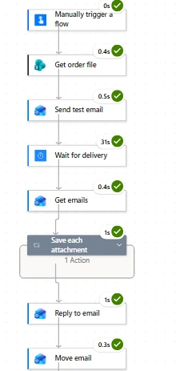

- Power Automate
- Level 7 · Files, email and documents · 1 of 7
Email attachments and file content
Many processes start with a file in an email: an order sheet, an invoice, a signed form. A flow can send files as attachments, read attachments from incoming mail and save them where the team works.
One flow, both directions
WhatAttachments are file content (Base64) plus a name, going out through Send an email and in through Get emails.
WhyGetting files out of inboxes and into libraries is one of the most common automations.
DemoEmail an order workbook, read it back from the Inbox, save the attachment to SharePoint.
The demo flow
Get order file from SharePoint
Send test email with it attached
Wait for delivery (31 s)
Get emails with attachments
Save each attachment (loop) → SharePoint
Reply, then move the email to Archive


Sending a file
File → attachment
Get file content → {"$content-type":…, "$content":"…"}
Send an email (V2) → Show all → Attachments: Name + Content
body('Get_order_file')?['$content']Saving attachments that arrive
Attachment → file
Get emails (V3) / trigger with Include attachments = Yes
Apply to each attachment
Inline image (signature logo)?
isInlineYes
Skip it
No
Create file: name +
base64ToBinary(contentBytes)base64ToBinary(items('Save_each_attachment')?['contentBytes'])| Piece | What it does |
|---|---|
?['contentBytes'] | The attachment as Base64 text. |
base64ToBinary(...) | Back to file bytes for Create file. |
Watch out
- Prefix names with a date or ID so files don't overwrite each other:
items('Save_each_attachment')?['name']. - Signature logos count as attachments; skip
isInlineones.
New to this? Start from the basics optional
Base64: a file written as text so it can travel in a flow.
Common mistakes
- Saving
contentByteswithoutbase64ToBinary(): the file is unreadable. - Include attachments off.
- Same file name every time.